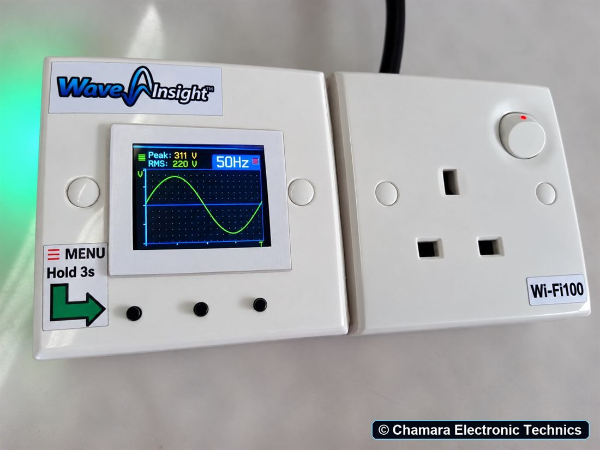

Wave Insight Wi-Fi100 brings live AC readings and waveform analysis to a browser dashboard. Use the local device page without internet, or enable remote viewing when an internet connection is available.

Local monitoring with optional remote viewing
Follow RMS voltage, peak voltage, and frequency as they change.
View the live AC waveform and total harmonic distortion in the browser dashboard.
Review individual harmonic levels, with analysis available up to the 50th harmonic.
Use the local device page over Wi-Fi without internet, or enable optional remote viewing online.
Review measurement history and see how readings change over time.
Configure alert limits and device options, install signed firmware updates, and receive email or Telegram alerts when internet is available.
Real-time AC waveform visualization.
Save and compare waveform patterns.
Measure AC waveforms up to 200Hz.
Adjust waveform comparison response.
Audio indication for waveform changes.
Compact handheld analyzer.
Wave Insight helps technicians and engineers observe AC waveform behavior for inverter, UPS, generator and power troubleshooting.